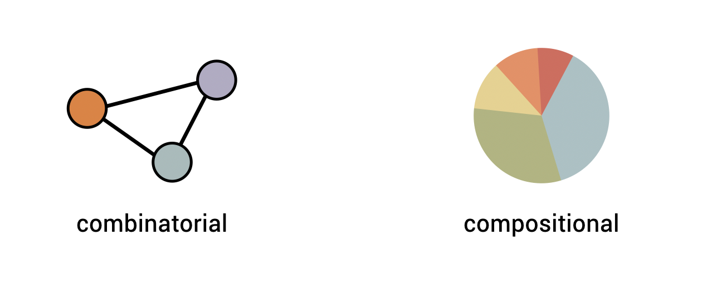
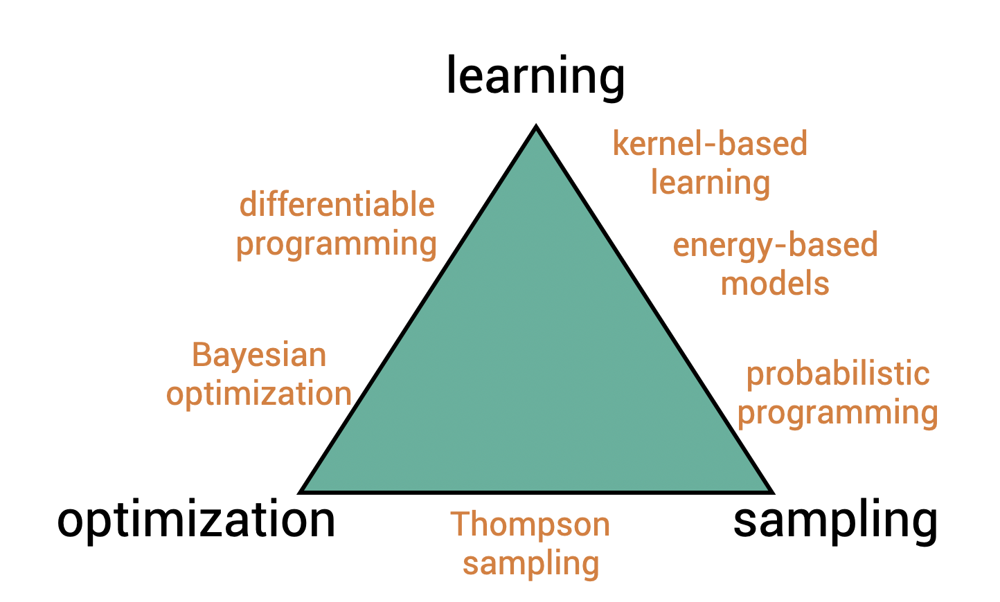

Research overview
Developing computational methods to model and design complex biosystems.
In bioengineering, most systems consist of smaller modules: ecosystems consist of species, a proteins can be designed from building blocks, a cocktail is a combination of mixers. In most cases, we don't really know how the parts interact and from a good design. The solution is to start from experiments or naturally occurring variants and see what we can learn from them.
In my research, I mainly deal with either combinatorial systems, where the question is which building blocks to select and how to connect them, and compositional systems, where one wants to determine the relative quantities of the modules. An example of the former is when one wants to pick bacteria for a biodegrading co-culture, while the latter would involve the bacteria's initial relative abundances. Key to these problems is that one typically has some kind of description or similarity over the building block one wants to exploit.

Tackling these problems usually involve a combination of learning, optimization and sampling. Learning involves fitting predictive models to understand designs. Optimization allows us to develop the next best design to test, while sampling acknowledges the inherent uncertainty in biological systems. I am fond of methods that one can be implement in a few lines of code (my PhD was about kernel methods). Most of the fun is discovering a new application or modification for an existing algorithm to find a wholly new use.

As part of the faculty of bioscience engineering, I work together with various people on applications in life science. My main interest is in community ecology, microbiomes and synthetic biology, though I always keep my eyes open for food-related ideas for hobby projects. Currently, I guide five PhD students. Two are working on methodological techniques; three are working on applications: designer phages, biofilm detection and microbiome engineering.
In research, personal or when working with others, I value learning and trying new things, creativity and collaboration as key principles.